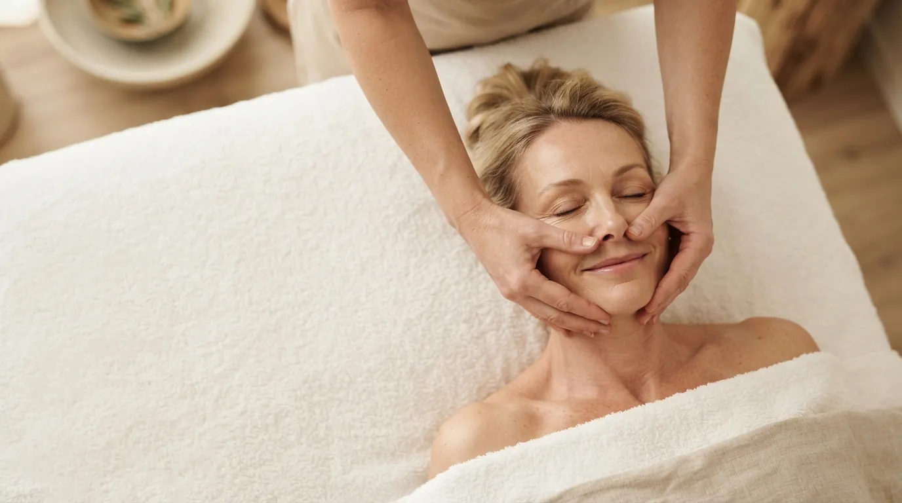

Facial massage · Prague 4
Signature Facial Massage by Liudmyla
Based on my own signature technique, combining specialised massage methods to improve skin tone, relieve facial tension, reduce puffiness and restore a fresh, relaxed and radiant appearance.
What the signature massage is
It is a complete facial treatment I put together from my own experience. A deep, multi-level procedure that releases muscle tension, improves blood and lymph circulation and naturally restores skin tone. I work on the neck, décolleté, face - including myofascial technique - and head.
One of the key benefits is its immediate visible aesthetic effect. It offers a quick beauty refresh, making it ideal before important business meetings, special occasions or after a long flight or journey, when you want to look fresh, rested and well-groomed in a short amount of time.
How the treatment works
- Neck and décolleté I start by releasing the neck and décolleté, so lymph can drain and the face is not held in tension.
- Face Myofascial technique releases tight muscles and fascia, combined with other methods chosen for your skin.
- Head A head massage releases tension that travels from the scalp into the forehead and face.
- Settling Closing gentle strokes calm the skin. You leave fresh and relaxed.
What the signature massage does
- better skin tone
- less tension in the face and jaw
- reduced puffiness
- improved circulation and lymph flow
- a fresh, rested, radiant look
- results you can see straight after the massage
Who it suits
Anyone who wants a quick, visible refresh - before an important meeting, a photo shoot, a celebration or after a long flight. It also works as regular care if you feel tension in your face, wake up puffy or notice your skin losing tone.
When we do not massage
- active acne, cold sores or skin inflammation
- recent fillers or botox (wait 2–3 weeks)
- recent chemical peel or laser treatment
- fever and acute illness
- lymphatic disorders without a doctor’s approval
Not sure? Call me before booking on +420 721 761 411 and we will talk it through.
Price of the signature massage
Frequently asked questions
When will I see the result?
Straight after the massage. The skin is flushed with fresh blood, puffiness goes down and the face looks rested. Regular sessions deepen the effect.
Can I come right before an important event?
Yes - that is exactly what it is good for. Just note the skin will be oiled after the massage, so make-up is best applied afterwards.
How is it different from other facial massages?
It is not one technique but a combination of several methods I have refined in practice. It covers the neck, décolleté, face with myofascial technique, and head.
How much does it cost?
The signature massage takes 60 minutes and costs 1 600 CZK. The price is final.
Book your signature massage
The studio is in Prague 4 - Nusle, a short walk from Pankrác and Vyšehrad. Booking online takes a minute.